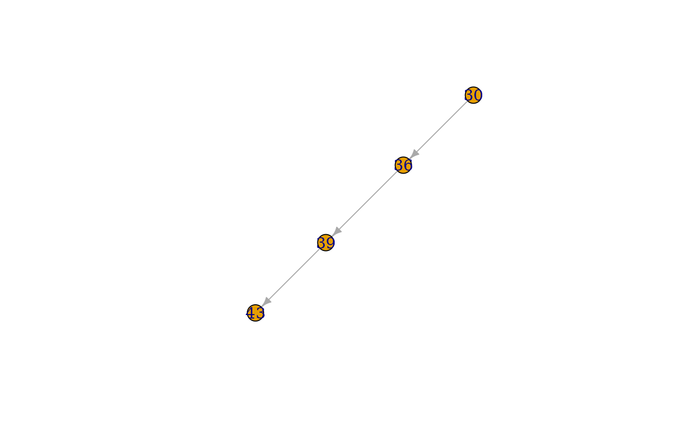

This routine reads in a valid Raven watershed discretization (.rvh) file and returns the information about HRUs and Subbasins as data tables. It also returns a subbasin igraph network object which describes stream network connectivity and adds additional HRU-derived subbasin characteristics such as total upstream area and dominant land/vegetation classes.
rvn_rvh_read(ff)the filepath of the .rvh file (with .rvh extension included).
Returns a list including:
a data table of Subbasin characteristics indexed by Subbasin ID (SBID). Includes the following data columns from the .rvh file : SBID, Name, Downstream_ID, Profile, ReachLength, Gauged. The rvn_rvh_read() functions supplements this with additional columns: Area, Elevation, AvgLatit, AvgLongit, AvgSlope, AvgAspect, DomLU, DomLUArea, DomLUFrac, DomVeg, DomVegArea, DomVegFrac. Elevation, AvgLatit, AvgLongit, AvgSlope, and AvgAspect are the area-weighted averages from all constituent HRUs. DomLU is the dominant land use name, DomLUArea is the area (in km2) of the dominant land use and DomLUArea is the percentage of the basin covered with DomLU; same applies to DomVeg.
a data table of HRU characteristics, with land use and vegetation classes as factors. Contains identical information as found in the :HRUs-:EndHRUs block of the .rvh file: ID, Area, Elevation, Latitude, Longitude, SBID, LandUse,Vegetation, SoilProfile, Aquifer, Terrain, Slope, and Aspect.
an igraph network graph network describing subbasin stream network connectivity, with nodes indexed by SBID.
The supplied file should not be comma-delimited with a trailing comma. The function also does not like tabs in the rvh file, the file should be untabified first. This function uses the igraph library to build the networks and compute the total upstream area. The .rvh file can have arbitrary contents outside of the :HRUs-:EndHRUs and :SubBasins-:EndSubBasins command blocks.
Partial rvh files may be provided to this function (i.e. with only :SubBasin or :HRUs blocks but not the other),
however, some calculations and the calculation of the SBnetwork output will not be completed. Omitted
structures (e.g. SBtable) will be returned as NULL if the section is not found in the rvh file directly.
Note that this function does not look for additional files specified with :RedirectToFile commands.
The ff argument can be a relative path name or absolute one.
The TotalUpstreamArea is the total drainage area upstream of the given subbasin outlet. With this calculation, headerwater subbasins will have a total upstream area equal to their own subbasin area.
rvn_rvh_write to write contents of the generated (and usually modified HRU and SubBasin tables)
rvn_rvh_subbasin_network_plot to plot the subbasin network
# load example rvh file
nith <- system.file("extdata","Nith.rvh",package = "RavenR")
rvh <- rvn_rvh_read(nith)
# number of HRUs
nrow(rvh$HRUtable)
#> [1] 32
# total watershed area
sum(rvh$HRUtable$Area)
#> [1] 1014.4
# sub-table of headwater basins (upstream area = subbasin area)
rvh$SBtable$SBID[rvh$SBtable$Area == rvh$SBtable$TotalUpstreamArea]
#> [1] 30
# sub-table of Urban HRUs
subset(rvh$HRUtable, LandUse == "URBAN")
#> ID Area Elevation Latitude Longitude SBID LandUse Vegetation SoilProfile
#> 24 24 6.9 346 43.38 -80.61 39 URBAN URBAN1 SOILPROFA
#> 32 32 5.3 299 43.29 -80.45 43 URBAN URBAN1 SOILPROFA
#> Aquifer Terrain Slope Aspect
#> 24 [NONE] [NONE] 1.67 182
#> 32 [NONE] [NONE] 1.35 171
# get total area upstream of subbasin containing outlet
upstr <- cumsum(rvh$SBtable$Area)
upstr[rvh$SBtable$Downstream_ID == -1]
#> [1] 1014.4
# show upstream areas for each subbasin
rvh$SBtable[,c("SBID","TotalUpstreamArea")]
#> SBID TotalUpstreamArea
#> 30 30 318.5
#> 36 36 537.7
#> 39 39 809.4
#> 43 43 1014.4
# plot network diagram using igraph library
igraph::plot.igraph(rvh$SBnetwork)
